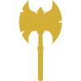
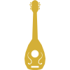
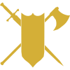
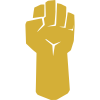
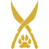

Bárbaro

O bárbaro é uma força imparável da natureza, um guerreiro primitivo cujo espírito indomável e ferocidade são lendários. O caos da batalha é o seu lar e a fúria o seu combustível. Esses guerreiros têm um profundo vínculo com a natureza selvagem e são temidos por sua brutalidade e resistência inigualáveis.
Habilidades-Chave:
- Fúria Selvagem: Entre em um estado de fúria, canalizando sua raiva para ganhar força extra, resistência a danos e ataques mais poderosos.
- Resistência Implacável: Sua constituição excepcional permite resistir a ferimentos que abateriam outros guerreiros, mantendo-se de pé mesmo nos momentos mais desesperadores.
- Ataques Brutais: Com golpes brutais, o bárbaro causa um dano devastador em seus inimigos, cortando através de armaduras e provocando medo nos corações de seus oponentes.
- Sentido Primitivo: Sua conexão com a natureza e instintos primordiais permite que detecte perigos, armadilhas e emboscadas antes que se tornem uma ameaça real.
- Caminho do Berserker: Escolha um caminho especializado, como o Berserker, que aumenta ainda mais sua capacidade de causar dano e aprimora sua fúria para níveis inimagináveis.
Bardo

Os bardos são artistas ambulantes, contadores de histórias e músicos talentosos. Eles dominam o poder da música e da magia para encantar, inspirar e manipular os outros. Com suas habilidades versáteis e carisma cativante, os bardos são capazes de desempenhar múltiplos papéis no grupo, tanto como apoiadores quanto como combatentes.
Habilidades-Chave:
- Magias Encantadoras: Os bardos são capazes de lançar magias através do poder da música, utilizando seu conhecimento arcano para curar ferimentos, lançar feitiços ofensivos e fornecer suporte mágico aos aliados.
- Inspiração Bárdica: Inspirando seus companheiros com suas palavras e música, os bardos concedem bônus de habilidade, permitindo que seus aliados realizem proezas incríveis.
- Perícia Versátil: Com uma ampla gama de habilidades, os bardos são especialistas em várias áreas, incluindo performance, persuasão, enganação e furtividade. Eles são versáteis em resolver problemas e interagir com personagens não-jogadores.
- Recuperação de Magias: Ao descansar, os bardos podem recuperar parte de suas magias, permitindo que continuem lançando feitiços poderosos durante suas aventuras.
- Colégios Bárdicos: Ao alcançar o 3º nível, os bardos podem escolher um Colégio Bárdico, uma especialização que lhes confere habilidades únicas. Alguns exemplos incluem o Colégio da Valor, que aprimora as habilidades de combate, e o Colégio do Glamour, que enfatiza o aspecto de encantamento e manipulação.
Bruxo
Os bruxos são praticantes das artes arcanas que fazem pactos com entidades poderosas, conhecidas como patronos. Esses pactos fornecem aos bruxos acesso a magias sombrias e habilidades sobrenaturais, mas também os ligam a uma força misteriosa e muitas vezes perigosa. Os bruxos são indivíduos intrigantes, sedentos por conhecimento proibido e dispostos a pagar o preço pela magia em troca de poder.
Habilidades-Chave:
- Pacto Arcano: Os bruxos estabelecem um pacto com um patrono, uma entidade extraplanar que concede poderes e conhecimentos arcanos em troca de serviços ou lealdade. Esses pactos podem variar desde pactos com seres demoníacos até pactos com entidades feéricas ou ancestrais poderosos.
- Magias Sombrias: Os bruxos possuem um repertório limitado de magias, mas podem lançá-las à vontade. Suas magias muitas vezes têm um toque sombrio, envolvendo necromancia, ilusões perturbadoras e feitiços de controle mental.
- Invocações: Os bruxos podem invocar poderes e habilidades adicionais através de invocações, que são escolhidas durante a criação do personagem e ao subir de nível. Essas invocações podem melhorar seus ataques, conceder resistências ou fornecer habilidades especiais.
- Recuperação de Magias: Diferente de outras classes mágicas, os bruxos recuperam todas as suas magias após um descanso curto, permitindo-lhes lançar magias poderosas com mais frequência.
- Familiar Arcano: Ao atingir o 3º nível, os bruxos podem convocar um familiar arcano, uma criatura mágica que os auxilia em suas aventuras, fornecendo benefícios como vantagens em testes de habilidade ou a capacidade de lançar magias adicionais.
Clérigo
Os clérigos são devotos religiosos que canalizam o poder divino para curar ferimentos, banir o mal e proteger os inocentes. Eles são líderes espirituais e servos de uma divindade, dedicados a espalhar a fé e cumprir a vontade de seu deus. Os clérigos desempenham um papel vital em suas comunidades, oferecendo orientação espiritual, realizando rituais sagrados e combatendo forças malignas em nome de sua divindade.
Habilidades-Chave:
- Magias Divinas: Os clérigos possuem acesso a um amplo repertório de magias divinas, que lhes permitem curar ferimentos, proteger aliados, banir mortos-vivos e lançar poderosos feitiços ofensivos contra seus inimigos.
- Domínio Divino: Ao escolher um domínio divino específico, como Vida, Luz, Guerra ou Natureza, os clérigos ganham habilidades adicionais e magias exclusivas relacionadas ao tema do seu domínio, aprofundando a conexão com sua divindade.
- Curar Ferimentos: Os clérigos são capazes de curar ferimentos e doenças, trazendo conforto e renovação aos aliados. Eles podem até mesmo trazer os mortos de volta à vida por meio de rituais sagrados.
- Canalizar Divindade: Os clérigos têm a capacidade de canalizar a energia divina em momentos críticos, desencadeando efeitos poderosos, como curar aliados, causar dano a criaturas malignas ou repelir mortos-vivos.
- Armadura e Armas Sagradas: Os clérigos têm proficiência em armaduras pesadas e uma variedade de armas, permitindo que lutem tanto no campo de batalha como suporte de cura.
Druida
Os druidas são os guardiões da natureza, indivíduos sintonizados com o fluxo vital do mundo natural. Eles são capazes de se conectar com os elementos, os animais e as forças primordiais da terra, assumindo formas animais e canalizando a energia da natureza em suas magias. Os druidas são tanto xamãs quanto defensores da natureza, comprometidos em preservar o equilíbrio e proteger os ecossistemas.
Habilidades-Chave:
- Forma Selvagem: Os druidas têm a habilidade de se transformar em animais, adquirindo as habilidades e características da criatura escolhida. Isso lhes confere maior mobilidade, furtividade ou até mesmo força bruta, permitindo que se adaptem a diferentes situações de combate e exploração.
- Magias da Natureza: Os druidas têm acesso a um amplo leque de magias relacionadas à natureza, como invocar animais aliados, controlar o clima, curar ferimentos e até mesmo causar danos elementais. Eles são mestres da magia druídica, capazes de manipular as forças naturais em seu benefício.
- Vínculo com a Natureza: Os druidas possuem uma forte conexão com o mundo natural, sendo capazes de se comunicar com animais, detectar elementos perturbadores na natureza e obter conhecimento sobre a fauna, flora e terrenos ao seu redor.
- Círculos Dracônicos: Ao escolher um círculo dracônico específico, como o Círculo da Terra, Círculo da Lua ou Círculo da Tempestade, os druidas ganham habilidades especiais relacionadas ao seu círculo, aprofundando sua afinidade com a natureza e suas capacidades mágicas.
- Herborismo e Sobrevivência: Os druidas são especialistas em herborismo e sobrevivência na natureza. Eles são capazes de identificar plantas medicinais, encontrar alimentos e abrigo em ambientes hostis e até mesmo criar poções e itens mágicos usando ingredientes naturais.
Feiticeiro
Os feiticeiros são portadores de um poder inato e misterioso, capazes de canalizar e manipular a essência da magia de forma intuitiva. Seu poder mágico flui em suas veias, resultado de um legado ancestral, linhagem mágica ou um evento transcendental em suas vidas. Diferente dos magos, que estudam e dominam a magia através de conhecimento e prática, os feiticeiros possuem uma conexão íntima e instintiva com a magia, manifestando seus poderes através de sua força de vontade e intuição.
Habilidades-Chave:
- Magia Inata: Os feiticeiros possuem um repertório limitado de magias, mas sua magia é inata e não precisa ser preparada com antecedência. Eles podem conjurar feitiços usando pontos de feitiçaria, uma energia mágica que flui em seu interior, permitindo que criem explosões de fogo, raios de energia, escudos protetores e muitos outros efeitos.
- Origens Mágicas: Cada feiticeiro possui uma origem mágica única, que define a fonte de seu poder. Pode ser uma linhagem de dragões, herança feérica, experimentos arcanos ou até mesmo um pacto com seres extraplanar. Cada origem mágica confere habilidades especiais e bônus únicos aos feiticeiros.
- Pontos de Feitiçaria: Os feiticeiros possuem pontos de feitiçaria, uma reserva de energia mágica que lhes permite modificar ou ampliar seus feitiços. Eles podem utilizar esses pontos para estender a duração de um feitiço, aumentar seu alcance, maximizar seu dano e até mesmo recuperar pontos de vida.
- Metamagia: Os feiticeiros têm acesso a metamagias, técnicas especiais que lhes permitem modificar e potencializar seus feitiços. Eles podem amplificar o poder de uma magia, torná-la mais difícil de ser resistida, alterar sua área de efeito e muito mais. A metamagia confere aos feiticeiros uma flexibilidade adicional na manipulação de sua magia.
- Resistência Mágica: Os feiticeiros possuem uma resistência natural a ataques mágicos. Sua afinidade com a magia lhes confere uma maior proteção contra feitiços e encantamentos, tornando-os mais difíceis de serem afetados por magias hostis.
Guerreiro

O guerreiro é o mestre das artes marciais, um combatente habilidoso e dedicado que domina diversas armas e táticas de combate. Seja com espadas, arcos, machados ou lanças, o guerreiro é uma força a ser temida no campo de batalha. Com uma disciplina implacável e treinamento rigoroso, eles se tornam especialistas em combate corpo a corpo e estrategistas astutos.
Habilidades-Chave:
- Mestre das Armas: Os guerreiros têm proficiência com uma ampla variedade de armas, desde espadas e lanças até machados e arcos. Eles dominam múltiplas técnicas de combate e são versáteis em qualquer situação.
- Estilo de Luta: Os guerreiros podem escolher um estilo de luta especializado que aprimora suas habilidades em combate. Eles podem se tornar especialistas em combate com duas armas, defesa com escudo, combate à distância, entre outros estilos.
- Ações Extra: Os guerreiros possuem ações extras durante o combate, permitindo que realizem ataques adicionais, desarmem oponentes, protejam aliados e executem manobras táticas. Essas ações extras tornam os guerreiros altamente eficientes e letais em combate.
- Segunda Vida: Em momentos de extrema necessidade, os guerreiros podem usar sua determinação e força de vontade para se recuperarem rapidamente de ferimentos graves, continuando a lutar mesmo quando outros teriam desistido.
- Arquétipos de Combate: Os guerreiros podem escolher um arquétipo de combate, como Campeão, Mestre de Armas, Cavaleiro ou Arqueiro Arcano. Cada arquétipo confere habilidades especiais e vantagens únicas, permitindo que os guerreiros personalizem ainda mais seu estilo de luta.
Ladino
O ladino é um mestre das sombras e um especialista em habilidades furtivas. Ágil, astuto e versátil, ele é o mestre das artes do subterfúgio e da esperteza. Os ladinos são especializados em se mover despercebidos, desarmar armadilhas, abrir fechaduras e, é claro, desferir golpes precisos e mortais nas sombras.
Habilidades-Chave:
- Furtividade: Os ladinos são mestres em se mover silenciosamente e se esconder nas sombras. Eles são capazes de se infiltrar em áreas protegidas e realizar ataques surpresa, garantindo vantagem em combate.
- Ataques Furtivos: Os ladinos possuem a habilidade de atacar com precisão letal. Seus golpes furtivos causam um dano extra quando atacam um inimigo desprevenido ou em desvantagem, permitindo que eles infligem danos significativos em momentos oportunos.
- Perícias Versáteis: Ladinos têm acesso a uma ampla variedade de perícias e talentos especializados. Eles podem ser especialistas em furtividade, percepção, enganação, arrombamento, entre outras habilidades, tornando-os mestres em várias áreas não combativas.
- Esquiva e Evasão: Os ladinos possuem agilidade sobrenatural e são capazes de evitar ataques e desviar-se de perigos com facilidade. Eles têm a capacidade de esquivar-se de ataques com sucesso e reduzir o dano recebido quando são atingidos.
- Arquétipos de Ladino: Os ladinos podem escolher um arquétipo de ladino, como Assassino, Trapaceiro Arcano ou Mestre das Sombras. Cada arquétipo confere habilidades especiais e vantagens únicas, permitindo que os ladinos se especializem em um estilo específico de jogo.
Mago
O mago é um mestre dos segredos arcanos, manipulador de energias místicas e detentor de um vasto conhecimento sobre magia. Esses estudiosos dedicam suas vidas ao estudo e prática das artes mágicas, desvendando os mistérios do universo e lançando feitiços poderosos. Os magos são eruditos e curiosos por natureza, buscando incessantemente expandir seus conhecimentos mágicos.
Habilidades-Chave:
- Repertório de Magias: Os magos possuem um vasto repertório de magias em seu livro de magias, permitindo que eles conjurem uma variedade de efeitos mágicos. Eles podem lançar feitiços ofensivos, defensivos, de utilidade e até mesmo alterar a realidade ao seu redor.
- Estudo Arcano: Magos dedicam-se a estudar e compreender os princípios arcanos que regem o mundo da magia. Eles possuem um alto nível de inteligência e são capazes de aprender e memorizar um grande número de magias, tornando-se especialistas em manipulação mágica.
- Recuperação de Magias: Ao descansar e estudar, os magos podem recuperar seus pontos de magia, permitindo que lancem mais feitiços ao longo do dia. Isso os torna extremamente versáteis, pois podem se adaptar às situações ao escolher e preparar diferentes magias.
- Foco Arcano: Magos podem escolher um foco arcano, como evocação, necromancia ou ilusão, que define suas habilidades especiais e aprimora sua capacidade em um campo específico de magia.
- Rituais e Magias Preparadas: Magos têm a capacidade única de lançar rituais mágicos, que não consomem pontos de magia, e de preparar um conjunto específico de magias a cada dia, garantindo flexibilidade e adaptabilidade em diferentes situações.
Monge

O monge é um mestre das artes marciais e um estudante disciplinado de uma tradição antiga. Por meio de um treinamento árduo e meditação, eles aprimoram seu corpo e mente, alcançando um equilíbrio perfeito entre força física, agilidade e poder espiritual. Os monges são guerreiros ágeis, capazes de desferir golpes precisos e rápidos, além de possuírem habilidades especiais que lhes conferem um toque místico.
Habilidades-Chave:
- Ataque Desarmado: Monges são especialistas em combate desarmado, capazes de utilizar técnicas de artes marciais para desferir golpes poderosos com suas mãos e pés. Eles podem causar dano significativo sem a necessidade de armas.
- Ki: Os monges possuem um reservatório de energia interna chamado Ki, que lhes confere habilidades sobrenaturais. Eles podem gastar pontos de Ki para executar ações extraordinárias, como golpes desarmados adicionais, velocidade aumentada e até mesmo manipulação dos elementos.
- Defesa sem Armadura: Monges são proficientes em lutar sem armadura, confiando em sua agilidade e reflexos para evitar ataques inimigos. Sua defesa é reforçada por técnicas de esquiva e desvio, permitindo que evitem dano com facilidade.
- Tradição do Monge: Ao escolher uma tradição, como o Caminho das Sombras ou o Caminho do Punho Aberto, os monges adquirem habilidades especiais que os diferenciam e lhes concedem poderes únicos relacionados à sua tradição escolhida.
- Movimento sem Esforço: Monges são capazes de mover-se com uma agilidade sobre-humana. Eles podem correr pelas paredes, andar sobre a água e até mesmo planar pelo ar, concedendo-lhes uma mobilidade incrível em qualquer ambiente.
Paladino
O paladino é um defensor devoto da justiça e da retidão, um guerreiro imbuido de poderes divinos. Eles são campeões da virtude, dedicados a proteger os oprimidos, combater o mal e honrar seus votos sagrados. Os paladinos são guerreiros habilidosos, mas também possuem uma conexão divina que lhes concede poderes místicos e a capacidade de realizar milagres.
Habilidades-Chave:
- Divindade Sagrada: Paladinos juram servir uma divindade, recebendo seus poderes diretamente dessa fonte divina. Essa conexão lhes concede habilidades únicas, como cura, detecção do mal e a capacidade de realizar magias sagradas.
- Toque Curativo: Paladinos possuem a habilidade de curar ferimentos e doenças com seu toque sagrado. Eles podem restaurar pontos de vida em si mesmos e em seus aliados, trazendo cura e alívio em momentos de necessidade.
- Aura Sagrada: A presença do paladino irradia uma aura sagrada que inspira e protege seus aliados. Eles podem conceder bônus de proteção, resistência a magias e até mesmo cura passiva a todos que estão próximos.
- Golpe Divino: Os paladinos têm a capacidade de infundir suas armas com energia divina, desferindo golpes poderosos que causam dano adicional. Esses ataques são particularmente eficazes contra inimigos malignos.
- Juramento Sagrado: Ao fazer um juramento, como o Juramento da Devoção ou o Juramento da Vingança, os paladinos assumem um código de conduta e adquirem habilidades especiais relacionadas ao seu juramento. Essas habilidades podem variar de proteção adicional a capacidades ofensivas aprimoradas.
Patrulheiro

O patrulheiro é um mestre das florestas e dos campos, um guerreiro altamente treinado que combina habilidades de combate com a sabedoria da natureza. Eles são exímios caçadores e rastreadores, capazes de seguir qualquer rastro e identificar ameaças antes que elas se tornem uma perigo real.
Habilidades-Chave:
- Habilidade de Rastreamento: Capaz de seguir qualquer rastro com precisão, o patrulheiro pode identificar perigos e localizar seus inimigos com facilidade.
- Furtividade: Com a habilidade de se mover sem ser detectado, o patrulheiro é capaz de se infiltrar em áreas inimigas e realizar missões furtivas com sucesso.
- Habilidades de Combate: O patrulheiro é um guerreiro altamente treinado, capaz de lutar com armas e combate corpo a corpo.
- Magia da Natureza: Como um mestre da natureza, o patrulheiro tem acesso a um conjunto de magias que reforçam suas habilidades naturais e ampliam sua capacidade de combate.
Artífice
O artífice é um mestre das artes arcanas e da tecnologia, combinando magia e engenhosidade para criar maravilhas mecânicas. Eles são inventores e criadores habilidosos, capazes de construir dispositivos mágicos e infundir objetos com poderes arcanos. Como artesãos e alquimistas, os artífices são impulsionados pela curiosidade e pela busca de conhecimento.
Habilidades-Chave:
- Mestre das Ferramentas: O artífice possui um conjunto de ferramentas especializadas que lhes permitem criar e aprimorar objetos mágicos, poções e dispositivos mecânicos.
- Infusões: Com a capacidade de infundir itens com magia, o artífice pode melhorar armas, armaduras e outros objetos, conferindo-lhes propriedades mágicas e benefícios adicionais.
- Construtos Mecânicos: Os artífices podem criar companheiros robóticos ou golems para ajudá-los em batalha e realizar tarefas específicas.
- Armas de Fogo: Essa classe tem afinidade com armas de fogo, podendo criar e usar esses dispositivos com maestria.
- Magia Arcana: Os artífices têm acesso a um conjunto único de magias, permitindo-lhes lançar feitiços e conjurar efeitos mágicos.